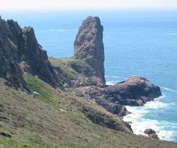
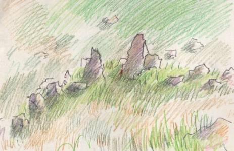
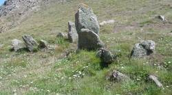
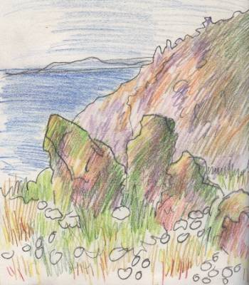

I' vaut vîsiter L'Pinnacl'ye pouor vaie les pièrres - nou dit qu'nou peut vaie eune fache sus L'Pinnacl'ye même et né v'là pouortchi qu'les gens pré-historiques soulaient louangi ichîn.

A view of this natural megalith from the North.
Eune veue dé chein qu'nou peut dêcrithe coumme eune longue-pièrre natuthelle des Landes du Nord.

A closer view of the prehistoric stone alignment.
La rangie d'pièrres d'vant L'Pinnacl'ye - eune muthâle pouor la d'fense ou tchiquechose d'aut'?

